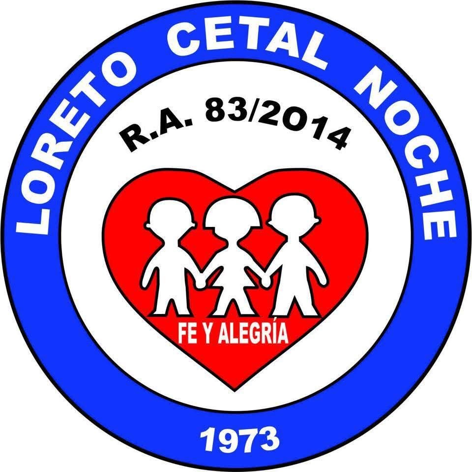

Línea de Energía y Cronología:
📌 Febrero 2026
Inicio de Gestión Académica CETAL
Inicio oficial de clases del Turno Noche. Conformación del grupo de Sistemas Informáticos, asignación de laboratorios y estructuración del plan de estudios.

📌 Abril 2026

Configuración de Servidores & Terminal Bash
Prácticas intensivas de comandos Linux, automatización con scripts Shell/Batch y despliegue de copias de seguridad.
📌 Mayo 2026

Confraternización y Torneos Deportivos
Participación de los equipos del curso en los torneos institucionales de Fútbol y Wally representando a Sistemas CETAL.